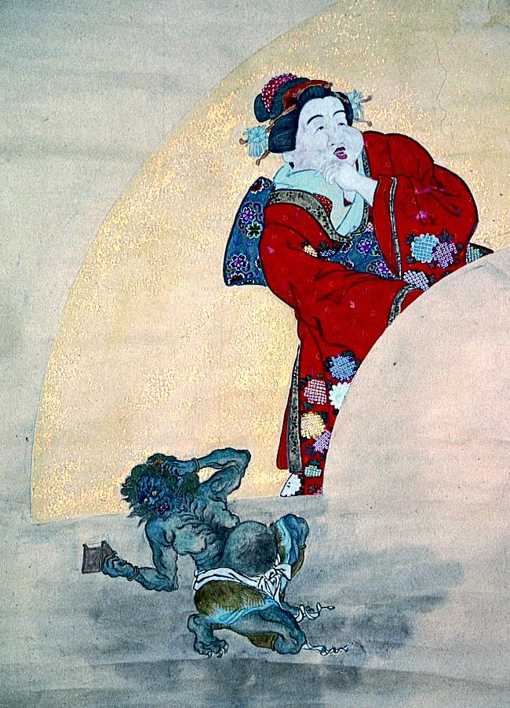

← 图鉴索引

お多福と青鬼。青鬼は女で、鏡で自らの姿を見て驚いているようである。
出典：親書誌：A5_pushkin_0066：（お多福鬼図；オタフクオニズ）／日付：2011／資源識別子：A5_pushkin_0066_0001_0000
Copyright (c)2010- International Research Center for Japanese Studies, Kyoto, Japan. All rights reserved.